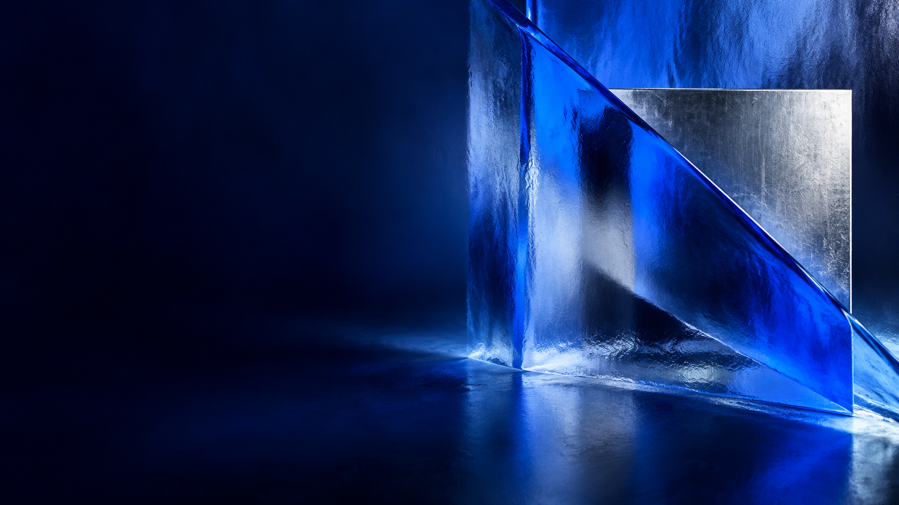

Направления проекта
01 / О проекте
На пересечении
идей.
Нам интересны люди, компании и явления, которые формируют новую реальность. Соединяем бизнес, культуру и технологии, чтобы находить идеи, имеющие значение.
«А в квадрате» — проект о том, как идеи превращаются в действия, а люди — в силу, меняющую среду.

Новая перспектива